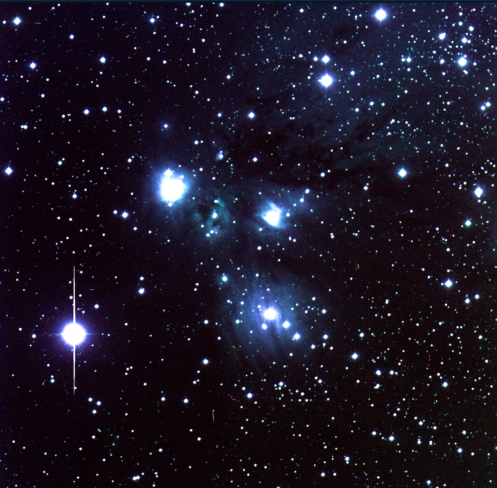

<!doctype html>
<html lang="en">

  <!doctype html>
<html lang="en">

<head>
 <meta charset="utf-8">
  <title> NASA&#39;s exoplanet program </title>
  <link rel="icon" type="image/png" href="images/colorcompos.png">
  <meta name="description" content="Hello World">
  <meta name="author" content="Sanya Arora">
  <meta name="description" content="A description of the search for extraterrestrial life">

  <meta content="text/html" http-equiv="Content-type" />
  <meta content="width=device-width, initial-scale=1" name="viewport" />

      <link href="https://fonts.googleapis.com/css2?family=Roboto&family=Ubuntu:wght@700&display=swap" rel="stylesheet">
  <link rel="stylesheet" href="https://maxcdn.bootstrapcdn.com/bootstrap/3.4.1/css/bootstrap.min.css">

   <script src="https://ajax.googleapis.com/ajax/libs/jquery/3.5.1/jquery.min.js"></script>
  <script src="https://maxcdn.bootstrapcdn.com/bootstrap/3.4.1/js/bootstrap.min.js"></script>
    <link rel="stylesheet" href="css/styles.css">

</head>


</html>
  <!doctype html>
<html lang="en">


<body>

	<nav class="navbar navbar-default">
	  <div class="container-fluid">
      <div class="navbar-header">
	      <a> </a>
	     </div>
	    <ul class="nav navbar-nav">
	    	<li> <a href="#" style="color: #2e2a65; font-family: 'Ubuntu', sans-serif; font-size:20px"> ASTR 230 Final Project</a> </li>
	      <li><a href ="index.html"> Home </a></li>
	      <li> <a href ="about.html"> About Me</a></li>
	      <li class="dropdown">
	        <a class="dropdown-toggle" data-toggle="dropdown" href="#">Project Info
	        <span class="caret"></span></a>
	        <ul class="dropdown-menu">


            <li><a href=background.html>Background and Motivation</a></li>

            <li><a href=data.html> Data Collection Methods </a></li>

            <li><a href=results.html>Results and Conclusions</a></li>


	        </ul>
	      </li>
	    </ul>
	  </div>
	</nav>


</body>
</html>

<body>

  <h2> NASA&#39;s exoplanet program </h2>
  <div class= "row">
      <div class ="col-lg-2">
        <h3> Sanya Arora </h3>
      </div>
      <div class ="col-lg-3">
        <h3> November 6, 2020 </h3>
      </div>
      <div class = "col-lg-2">
         <h3> 7:00pm </h3>
      </div>

  </div>
      <div class = "container-fluid">
        <div class ="col-lg-12">
          <div class="jumbotron vertical-center" style="background-color: #f2e6dc">


            <p class="text"> NASA&#39;s exoplanet program is aimed at finding life on other planets. Early projects include NASA’s Kepler and K2, or the James Webb Space Telescope In recent news, scientists at the NASA Exoplanet Science Institute are debating whether or not to expand their classification of a habitable planet. Some scientists argue that our current model is too limiting, as it defines a habitable planet based on what is habitable for life on Earth. <br> </p>

            <p class="text">  NASA reports that the search for extraterrestrial life will be a slow one, possible taking decades to complete. As a result, we will have to wait a while before finding any alien life. <br> </p>


      </div>
    </div>
  </div>

<footer>
<html>

<div class ="footer">
  <p> Year of Creation: 2020, License Statement: No Cemmerical Use, Authorship Attribution: Sanya Arora </p>
</div>
</html>
</footer>
</body>

</html>
